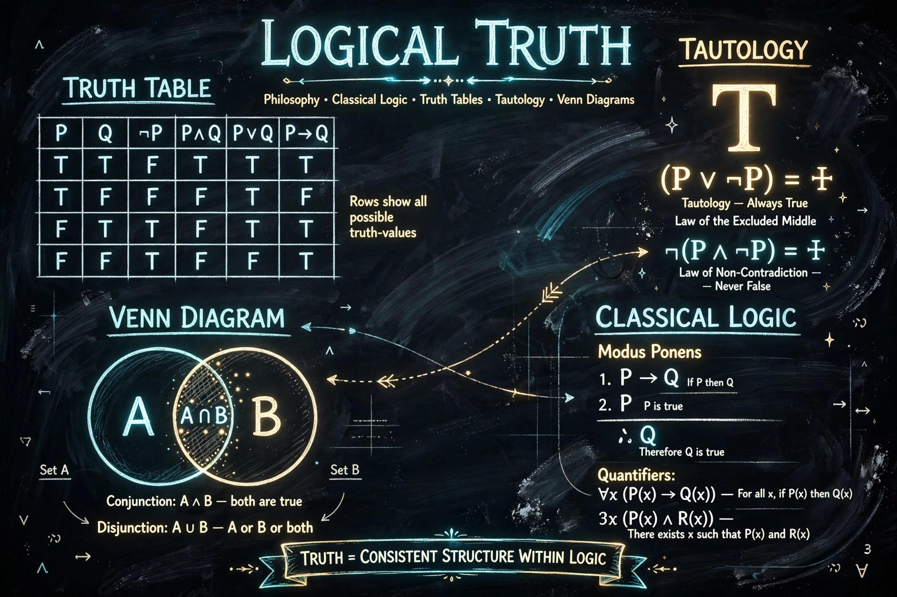

A logical truth is a statement that is true in all possible worlds and under all interpretations of its non-logical components, solely in virtue of its logical form. Examples include "if p, then p" and the law of non-contradiction.

Logical truths, such as those in propositional logic called tautologies, remain true when non-logical terms are uniformly replaced. They contrast with factual or synthetic truths, which depend on the world.
Philosophers debate whether logical truth coincides with analytic truth and necessary truth. Kant, the logical positivists, Quine and Kripke offered influential, differing accounts. In first-order logic, logical validity is linked to Gödel's completeness theorem.